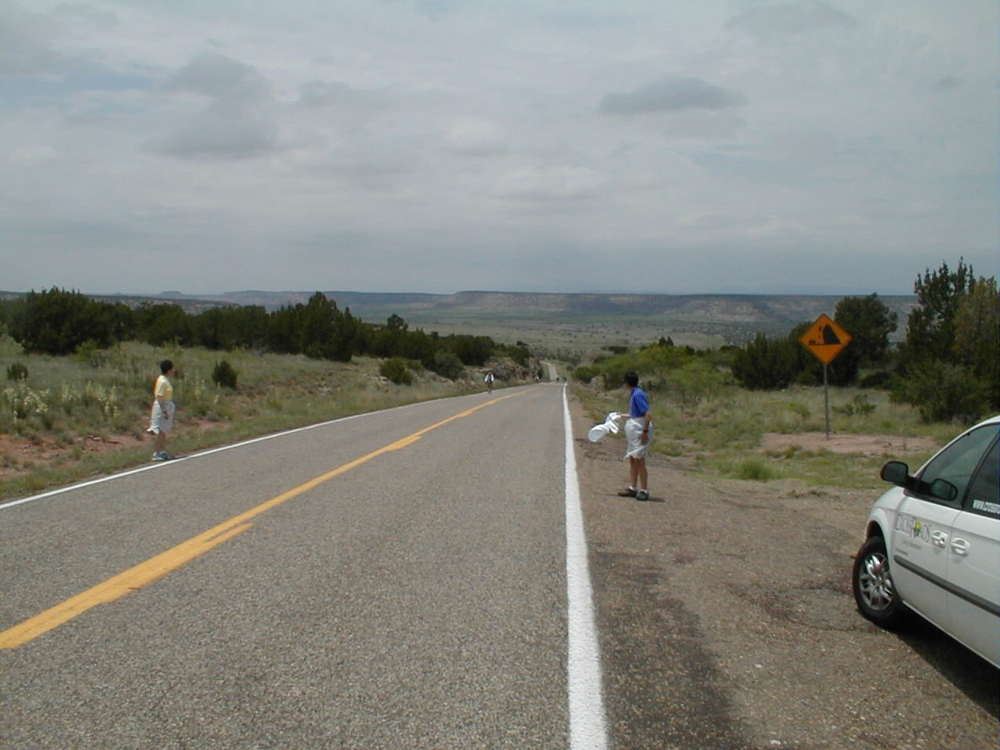

Day 16: May 28, Las Vegas, NM to Tucumcari, NMPrevious Day - Home - Next Day Photo of the DayThe view from the top. Keegan's LogDay 16: May 28, Las Vegas, NM to Tucumcari, NM Mileage: 111.31 milesWeather: 60-85 degrees, Overcast, Headwinds Vertical Climb: 4400 feet Riding Time: 8:00 Today was a tough day. The ride to Tucumcari is traditionally fraught with headwinds, and Mother Nature would not disappoint. At 111 miles and over 4,000 feet of climbing, it was basically like doing both days of the Hilly Hundred back to back, with a headwind the whole way. But we made it, eventually... Today began with breakfast at Pino's, which was equally bad as last night's dinner at the same restaurant. We snuck out a few minutes early and left at 7:00. At 1.8 miles we turned onto Route 104, which we followed all the way to the hotel in Tucumcari. This was also the last rest room we would pass for more than 75 miles. Out of Las Vegas we climbed through the high plains, there were long stretches with no trees on either side of the road. On the upside, we saw real grass for the first time since near Riverside, CA. I got a flat less than 10 miles into the ride, a tiny rock this time. The first sag was on the front lawn of someone's Mobile Home (with permission, of course), it was the only place to stop for miles around. We only stayed for 5 minutes because were were already running a little short on time thanks to my flat. After only a few more ups and downs we reached a surprise descent, we passed over a ridge and had 3 miles of coasting. The valley below shielded us from the wind somewhat, we continued on to the next rest stop at 48 miles. The sag was in a "park", a New Mexican word for "picnic table on the shoulder of a highway." Due to the limited services, the staff had made sandwiches for our lunches, I had a wonderful ham and cheese sandwich. We kept the lunch stop as short as possible as we were again getting tight on time. We traversed 15 miles of rolling hills until we reached a mammoth .7 mile climb with a 9% grade. After a few minutes of grinding away, I turned around to see a bird's-eye view of the valley from between the two rock faces the road had been cut into. Once dad reached the top we continued on, again through the ups and downs, to the third sag. We reached the store at 76 miles, and waited in line for the first bathroom since we had left the hotel. Now that we had climbed out of the canyon the winds had picked up again, promising to make our final 32 miles less than easy. We left the final sag at around 1:30, almost a half hour ahead of schedule. We were both tired from the hills and wind already, but the winds continued to pick up the more we moved on. The terrain was again up and down, we moved from one ridge to the next. The descent down a ridge would sometimes reach speeds of up to 15 mph, the headwinds preventing us from moving any faster. We stopped to rest every 5 miles at that point, the road just stretched on in a straight (though not flat) line in either direction for miles. Finally we climbed one last long hill and found downtown Tucumcari. The hotel was another 2 miles, we got our room a little after 4:30 and hit the beds, exhausted. The weather was very much in our favor today, unlike some past years. We still had a brisk headwind to deal with, but the skies were completely overcast, so the temperature never got above 85 degrees. We also lucked out in that the threatening skies never rained on us, we were worried more than a few times that we would get drenched. Had it not been for the winds, today would have been a very nice ride. No time to rest, tomorrow is a 96 mile today to Dalhart, TX. Traditionally tomorrow has a nice tailwind, here's to hoping that tradition hold as well. Phil's LogWe had headwinds. |
{kind=link}